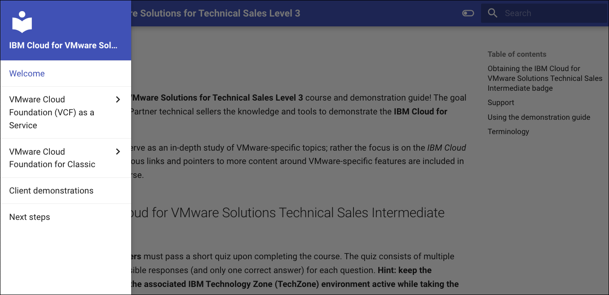
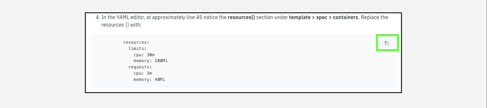

Welcome
Welcome to the IBM Cloud for VMware Solutions for Technical Sales Level 3 course and demonstration guide! The goal is to provide IBM and Business Partner technical sellers the knowledge and tools to demonstrate the IBM Cloud for VMware Solutions}} offerings.
This course is not intended to serve as an in-depth study of VMware-specific topics; rather the focus is on the IBM Cloud aspects of the offerings. Numerous links and pointers to more content around VMware-specific features are included in each of the modules of this course.
Obtaining the IBM Cloud for VMware Solutions Technical Sales Intermediate badge
Business Partner technical sellers must pass a short quiz upon completing the course. The quiz consists of multiple choice questions, with four possible responses (and only one correct answer) for each question. Hint: keep the demonstration guide open and the associated IBM Technology Zone (TechZone) environment active while taking the quiz.
IBM technical sellers must develop and record a Stand and Deliver presentation. This video is intended to simulate your delivery of a “live” demo in front of a client. IBMers have the flexibility to define a hypothetical client, the pain points the client has, and the goals they aspire to achieve. The recording must be a demonstration that pitches the value of the IBM solution by using the environments and techniques described in this lab.
Specific criteria that must be demonstrated as part of the Stand and Deliver recordings are provided within the documentation that accompanies the Level 3 course in Your Learning. Before continuing to the next module, read the guidance that follows. Your comprehension of the information outlined will save you time while completing the lab work. Hint: keep the demonstration guide and the associated IBM Technology Zone (TechZone) environment active when creating the Stand and Deliver.
Support
Think something is down? Check the applicable status pages for any known issues like a site or service being down:
For issues with provisioning an environment in IBM Technology Zone (ITZ) (for example, a failed reservation request due to insufficient quota capacity) open a ticket with ITZ support:
-
Web: IBM Technology Zone
-
E-mail: techzone.help.ibm.com
For issues related to specific steps found in the demonstration guide after the ITZ environment is provisioned, contact the authors:
- Slack: #cloud-platform-demo-feedback - IBM only
- E-mail: andrewj@us.ibm.com;hlwillia@us.ibm.com
Business Partners can also utilize the IBM Training live Chat Support service or other support methods found on the IBM Training portal here.
Using the demonstration guide
The Level 3 demonstration guide is organized into two chapters; covering the VMware Cloud Foundation (VCF) as a Service and VCF for Classic offerings of the IBM Cloud for VMware Solutions portfolio. These chapters contain modules that provide an Introduction to the offering, steps to Provision an instance, and explore how clients Manage their instances through the IBM Cloud portal and the respective VMware tools. The VCF as a Service module focuses on the multitenant offering and includes modules on operating an instance using VMware vCloud Director (VCD) and monitoring an instance with IBM Cloud Monitoring.
This Demonstration Guide uses a reactive browser-based interface. The Demonstration Guide table of contents may be displayed as highlighted in the green dashed box in this image:
However, if the browser window is sized smaller, the table of contents will only be accessible by clicking the main menu icon ( ) (highlighted by solid green box):
) (highlighted by solid green box):

Click the main menu icon () to expand the table of contents.

WARNING
The agile nature of cloud means that the interface and layout of the IBM Cloud Portal and the IBM Cloud for VMware Solutions offerings can change regularly. Screenshots and videos that are captured within this documentation might not reflect the current versions available from IBM Cloud.
In some images, the following styles of highlighting are used:
-
Solid highlight box: This style of box highlights where to click, enter, or select an item.

-
Dash highlight box: This style of box highlights one of two things: the path to follow to get to a specific location in the user interface, or areas to explore on your own.

-
Copy to the clipboard: The text is copied to the clipboard. Click the copy icon (highlighted below) and then use the operating system paste function. For example, entering
Ctrl+v,Cmd+v, or right-click and selectPaste.  -
Click-thru interactive demonstrations: Links to click-thru demonstrations open in a new browser window or tab. Click the play icon to get started and follow the steps that are outlined. If unsure of how to proceed, click anywhere on the screen and a highlight box indicates where to click next.

Terminology
The following acronyms and short-form terminology are used throughout the guide:
APIs: Application programming interfaces
CIDR: Classless inter-domain routing
Control (ctrl): The control key on keyboard
Command (cmd): The command key on keyboard
DR: Disaster Recovery
DNS: Domain Name Service
DHCP: Dynamic Host Configuration Protocol
GB: Gigabyte
Gbps: Gigabits per second *HIPAA: Health Insurance Portability and Accountability Act
HA: High Availability
ITZ: IBM Technology Zone
ID: Identification
IAM: Identity Access Management
IaaS: Infrastructure as a Service
IOPs: Input/output operations per second
IP: Internet Protocol
OS: Operating System
RAM: Random access memory
RPO: Recovery Point Objective
RAS: Reliability, Availability, and Serviceability
SDDC: Software Defined Data Center
SSH: Secure Shell
TechZone: IBM Technology Zone
vApp: Virtual Application
vCPU: Virtual Central Processor Unit
VCD: VMware Cloud Director
VCF: VMware Cloud Foundation
VDC: Virtual Data Center
VM:L Virtual Machine
VCS: VMware vCenter Server
vRLI: VMware vRealize Log Insight
vROps: VMware vRealize Operations